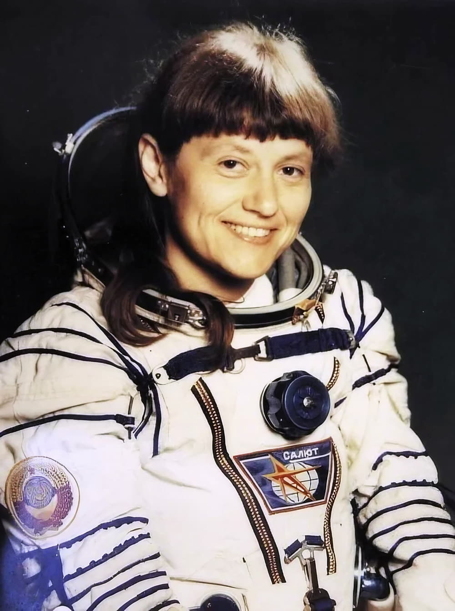

Светлана Савицкая
Первая в мире женщина, вышедшая в открытый космос.

Дорога в космос
Светлана Савицкая была не только космонавтом, но и летчиком-испытателем. В 1982 году она совершила свой первый полёт на станцию «Салют-7».
Выход в открытый космос
25 июля 1984 года во время второго полёта Светлана Савицкая стала первой в истории женщиной, которая вышла в открытый космос. Она провела вне станции 3 часа 35 минут, выполняя сложные инженерные работы.
А ты знал?
Именно Савицкая во время своего выхода в космос впервые провела уникальный эксперимент: она резала и сваривала металл в условиях невесомости с помощью специального универсального инструмента.